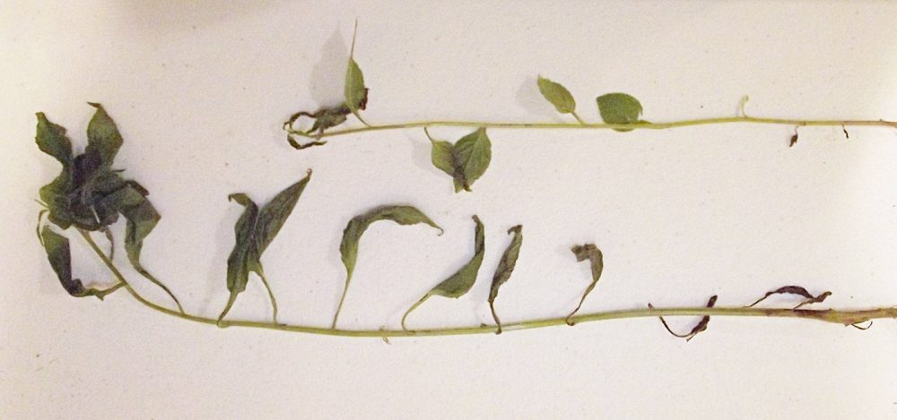
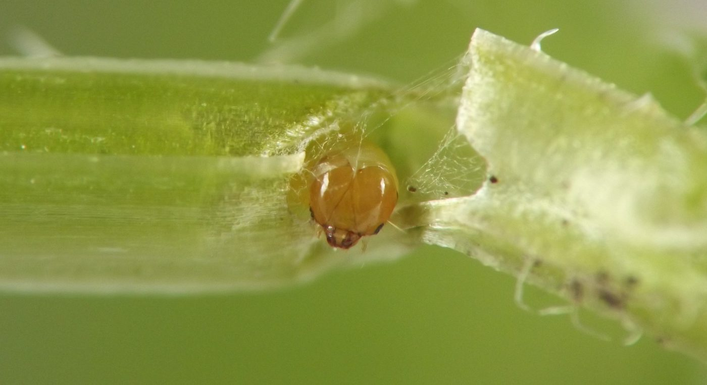
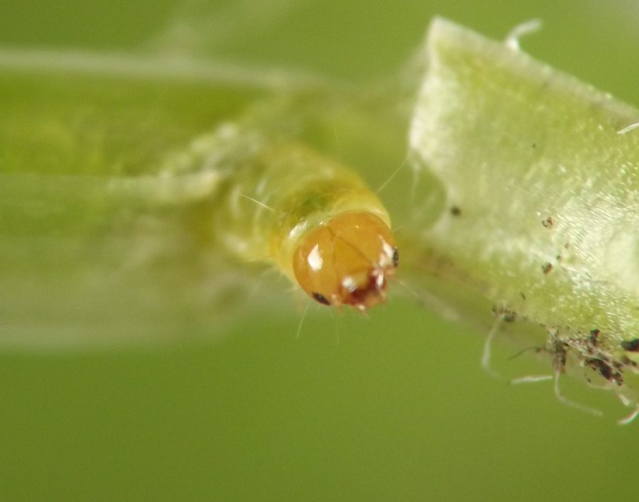
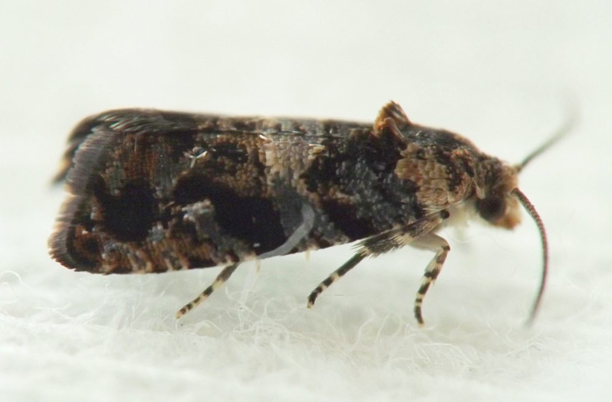

Stem borer (Lepidoptera: Tortricidae) in Campanulastrum
| Record no.: | 0120 |
|---|---|
| Feeding guild: | Stem borer |
| Taxonomy: | Lepidoptera: Tortricidae: cf. Paralobesia |
| Stages observed: | trace, larva, adult |
| Distribution observed: | IA |
| Hosts in Campanulastrum: | C. americanum (American bellflower) |
Larvae tunnel in growing shoots of the host, causing them to wilt conspicuously. I reared an adult in mid-July, 2021, from a larva collected in late June. The adult appeared somewhat similar to those Hatfield (2022c) and I have both reared from fruits of the same host; one of Hatfield's adults was identified as Paralobesia pallicircula by M. Sabourin via dissection.

 Prev
Prev
{kind=link}
{kind=link}

{kind=link}

{kind=link}

- Hatfield, M.J. 2022c. Olethreutinae, Paralobesia pallicircula larva in pods of American Bellflower - Paralobesia pallicircula - Female. Contributor post on BugGuide.net. Retrieved January 28, 2026 from https://www.bugguide.net/node/view/2090153.[return to in-text citation]
Page created: February 10, 2026. Last update: August 28, 2026